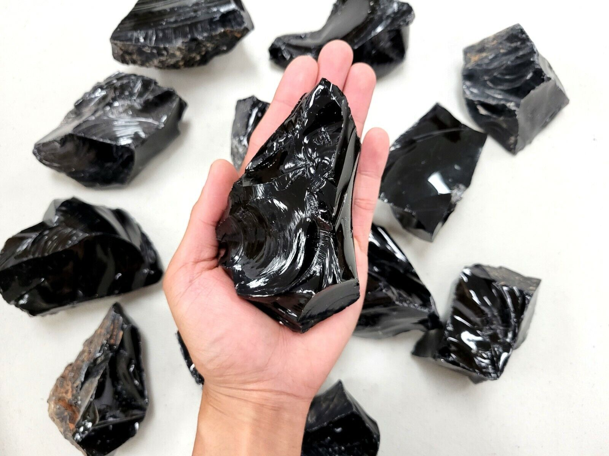
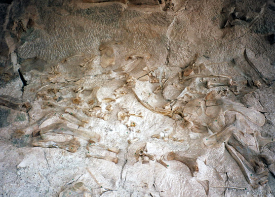

New here?

New to rockhounding and don't know where to start? Not to worry, we will show you the ropes. Click below to head over to our "Getting Started" guide
Getting StartedRocks & Minerals In Utah


Utah is a treasure trove when it comes to rockhounding. There are plenty of places to go for free and find cool rocks, crystals, and minerals. Pictured above on the left is a geode found in the dugway geode beds. These geodes are some of the most spectacular in the world. In the middle is a stunning pieces of azurite and malachite. Due to Utah's rich copper mines, there is plenty of azurite and malachite to be found. On the right is the elusive red beryl. Red beryl is one of the most rare crystals in the world, Utah being home to one of only three known locations in the world where it can be found!
Sponsored Dig Site

Visiting Utah soon? Come do a Topaz Mountain dynamite blast! We will blow off a part of the mountain just for you so you can have a hand at finding some of the most spectacular topaz crystals in the world!
Dig With UsPopular Rocks In Utah
-
 Geode
GeodeGeodes are hollow, spherical rocks filled with crystals. They can be found in the Dugway Geode Beds and the Juab County area. Geodes can have various colors, such as purple, yellow, and orange.
Read More -
 Agate
AgateAgate is a banded, translucent, cryptocrystalline variety of silica. It can be found in Millard County and the Topaz Mountain area. Agates can exhibit a wide range of colors, including white, black, red, orange, yellow, and purple.
Read More -
 Malachite
MalachiteMalachite is a green copper carbonate hydroxide mineral. It can be found in the Copper Globe Mine and the Old Reliable Mine in Utah. Malachite typically comes in various shades of green.
Read More -
 Azurite
AzuriteAzurite is a blue copper carbonate mineral. It often occurs alongside Malachite, and can be found near old copper mines. Pictured here is a type of called blueberry azurite, which can be found in Moab, Ut.
Read More -
 Amethyst
AmethystAmethyst is a purple variety of quartz. It can be found in the Thomas Range and the Spor Mountain area. Amethyst usually comes in shades of purple, ranging from light lavender to deep violet.
Read More -
Sherry Topaz
Sherry Topaz is a variety of topaz that ranges in color from pale yellow to deep orange. It can also be found at Topaz Mountain in the Thomas Range. Sherry Topaz exhibits warm hues of yellow and orange.
Read More -
 Copper Ore
Copper OreCopper Ore consists of copper-bearing minerals such as malachite, azurite, and chrysocolla. Copper ores come in various colors, including blue, green, red, and orange.
Read More -
 Silver Ore
Silver OreSilver Ore consists of silver-bearing minerals such as acanthite and argentite. Silver ores usually have a metallic gray color and may exhibit a shiny appearance.
Read More -
 Trilobites
TrilobitesTrilobites are extinct marine arthropods that can be found as fossils in sedimentary rocks. In Utah, trilobite fossils can be found in the U-Dig Fossil Quarry and the House Range area. Trilobite fossils typically appear as black or dark brown imprints on gray or tan-colored rocks.
Read More -
Red Beryl
Red Beryl is a rare red variety of beryl that can be found in the Wah Wah Mountains of Utah. This gemstone exhibits a deep red color, sometimes referred to as "scarlet emerald."
Read More -
 Calcite
CalciteCalcite is a common calcium carbonate mineral that can be found in various colors, including yellow. In Utah, notable calcite deposits can be found in the Tintic Mining District and the Thomas Range.
Read More -
 Variscite
VarisciteVariscite is a rare green phosphate mineral that can be found in the Little Green Monster Mine in Utah. It typically comes in various shades of green, often with a spiderweb-like pattern.
Read More -
 Aquamarine
AquamarineAquamarine is a blue variety of beryl. It can be found in the Wah Wah Mountains and the Thomas Range in Utah. Aquamarine typically comes in shades of blue, ranging from pale to deep blue.
Read More -
 Gypsum
GypsumGypsum is a common sulfate mineral that can be found in various locations throughout Utah, including the Spor Mountain area and the Great Salt Lake Desert. It is typically white or colorless and can form large, well-defined crystals.
Read More -

Obsidian
Obsidian is a naturally occurring volcanic glass that can be found in the Black Rock Desert and the Mineral Mountains in Utah. It is typically black and can have a sharp, glass-like appearance.
Read More -
 Sulfur
SulfurSulfur is a bright yellow element that can be found in its pure form in volcanic areas such as the Sulphurdale area in Utah. Sulfur is typically yellow and can form well-defined crystals.
Read More -
Wonderstone
Wonderstone is a type of rhyolite that is known for its striking patterns and colors. It can be found in the Vernon Hills area and the central Utah region. Wonderstone typically exhibits various shades of brown, red, and yellow in swirling or banded patterns.
Read More -
Halite
Halite, also known as rock salt, is a common mineral that can be found in the Great Salt Lake and the Bonneville Salt Flats in Utah. It is typically white or colorless but can also appear in shades of blue, pink, and yellow.
Read More -
 Fish Fossils
Fish FossilsFish fossils from the Eocene Epoch can be found in the Green River Formation in eastern Utah. These fossils typically appear as detailed imprints of fish on tan or gray sedimentary rocks.
Read More -

Dinosaur Bones
Dinosaur bones can be found in various locations throughout Utah, including the Grand Staircase-Escalante National Monument and the Cleveland-Lloyd Dinosaur Quarry. These fossils usually appear as brown or black petrified bone fragments in sedimentary rocks.
Read More -
 Ammonites
AmmonitesAmmonites are extinct marine mollusks that can be found as fossils in sedimentary rocks. In Utah, ammonite fossils can be found in the Mancos Shale Formation and the House Range area. Ammonite fossils typically appear as coiled or spiral imprints on gray or tan-colored rocks.
Read More -
 Barite
BariteBarite is a barium sulfate mineral that can be found in various locations throughout Utah, including the Confusion Range and the Thomas Range. Barite is typically colorless or white but can also appear in shades of blue, yellow, and brown.
Read More -
 Hematite
HematiteHematite is an iron oxide mineral that can be found in various locations throughout Utah, including the Iron Springs District and the San Rafael Swell. Hematite is typically black or red and has a metallic luster and non-magnetic properties.
Read More -
 Gold Ore
Gold OreGold Ore consists of gold-bearing minerals such as native gold and electrum. Gold ores can be found in various locations throughout Utah, including the Oquirrh Mountains and the Tushar Mountains. Gold ores usually have a metallic yellow color and may exhibit a shiny appearance.
Read More -
 Selenite
SeleniteSelenite is a transparent or translucent variety of gypsum that can be found in various locations throughout Utah, including the Great Salt Lake Desert and the Spor Mountain area. Selenite is typically colorless or white and can form large, well-defined crystals.
Read More -
 Pyrite
PyritePyrite, also known as fool's gold, is an iron sulfide mineral that can be found in various locations throughout Utah, including the Oquirrh Mountains and the Bingham Canyon Mine. Pyrite is typically metallic yellow and can exhibit a shiny appearance.
Read More -
Plant Fossils
Plant fossils can be found in various locations throughout Utah, including the Wasatch Plateau and the Uinta Basin. These fossils typically appear as detailed imprints of leaves, stems, and other plant parts on sedimentary rocks.
Read More
Popular Areas In Utah
-
Dugway Geode Beds
The Dugway Geodge Beds are a popular place for rockhounders to find small and medium sized geodes. There are some rules about where you can dig, so read up before heading out.
Read More -
Topaz Mountain
Topaz Mountain is a rockhounders dream. It has a free and paid section where you can go bust open rocks in search of gorgeous topaz crystals.
Read More -
 U-Dig Fossil Quarry
U-Dig Fossil QuarryThe U-Dig Fossil Quarry is a privately-owned quarry that offers the opportunity to collect well-preserved trilobite fossils. Visitors pay a fee and are provided with tools to dig and split the shale layers, revealing the fossils within.
Read More -
Dinosaur National Monument
Dinosaur National Monument is a world-renowned site for dinosaur fossils. The Quarry Exhibit Hall allows visitors to view a preserved quarry face with numerous dinosaur bones still embedded in the rock, as well as participate in ranger-led programs.
Read More -
Wah Wah Mountains
The Wah Wah Mountains are home to rare red beryl, also known as bixbite, which is found in only a few locations worldwide. Some areas in the Wah Wah Mountains are privately owned and may charge a fee for collecting, while others may be open to public access.
Read More -
Spor Mountain
Spor Mountain is a famous locality for a variety of minerals, including bixbyite, pseudobrookite, and amethyst. The area is under the jurisdiction of the BLM, so ensure you follow proper collecting guidelines and respect the land.
Read More -
San Rafael Swell
The San Rafael Swell is a large geologic feature in central Utah known for its scenic beauty and variety of minerals, including agate, jasper, and petrified wood. Collecting is allowed on BLM land, but be sure to follow all regulations and stay on designated roads.
Read More -
Sunstone Knoll
Sunstone Knoll is a volcanic formation located in Millard County, Utah. The area is known for sunstones, which are yellow to reddish-brown labradorite feldspar crystals. Collecting is allowed on BLM land, but follow all regulations and stay on designated roads.
Read More -
Tushar Mountains
The Tushar Mountains in southern Utah are home to several historic mining districts, including the Gold Mountain Mining District. Gold, silver, and other mineral specimens can be found in the area. When exploring, be aware of private property and mining claim boundaries.
Read More -
 Bingham Canyon Mine
Bingham Canyon MineThe Bingham Canyon Mine, also known as the Kennecott Copper Mine, is one of the largest open-pit mines in the world. While collecting is not allowed within the mine itself, nearby areas offer opportunities to find copper minerals, such as azurite, malachite, and chrysocolla.
Read More -
Little Salt Lake
Little Salt Lake, located in Iron County, Utah, is known for its deposits of colorful agates and jaspers. Rockhounds can collect specimens on BLM land, but ensure you follow all regulations and stay on designated roads.
Read More
Geology of Utah
Utah, located in the western United States, is renowned for its diverse and breathtaking geological features. The state's unique geology is a result of millions of years of tectonic and erosional processes. With an array of sedimentary, igneous, and metamorphic rocks, Utah showcases a rich geological history that spans from the Precambrian to the Cenozoic eras. The region's stunning landscapes, including the iconic red rock formations, salt flats, and rugged mountain ranges, attract geologists and outdoor enthusiasts alike.
One of Utah's most fascinating geological features is the Colorado Plateau, a vast and elevated region covering parts of Utah, Colorado, Arizona, and New Mexico. This area is well known for its striking sedimentary rock layers, which have been carved by the Colorado River and its tributaries into spectacular canyons, mesas, and buttes. The Plateau's red, orange, and white rock formations are made up of sandstone, shale, and limestone, and are the result of ancient depositional environments, such as deserts, swamps, and shallow seas.
Utah's Great Basin, located to the west of the Colorado Plateau, is another notable geological feature. This region is characterized by its semi-arid climate, large salt flats, and numerous mountain ranges. The Bonneville Salt Flats, a remnant of the ancient Lake Bonneville, is an expansive salt pan that covers over 30,000 acres. The Great Salt Lake, the largest saltwater lake in the Western Hemisphere, is another impressive feature of the Great Basin and is a critical habitat for migratory birds and brine shrimp.
The Wasatch Range, a series of mountains that run north to south through central Utah, forms the western edge of the Rocky Mountains. These mountains were created by significant tectonic uplift during the Laramide orogeny, a period of mountain-building that began around 70 million years ago. The Wasatch Range is home to world-class ski resorts, and its steep terrain contributes to the formation of deep canyons and dramatic landscapes, such as the Uinta-Wasatch-Cache National Forest.
Utah's diverse geology has also resulted in a wealth of mineral and fossil resources. The state is home to world-class mineral collecting sites, including Topaz Mountain and the Dugway Geode Beds, where rockhounds can uncover precious gems and minerals. Additionally, Utah's rich fossil record tells the story of its prehistoric past, with sites such as the Cleveland-Lloyd Dinosaur Quarry and the U-Dig Fossil Quarry offering glimpses into the lives of ancient marine and terrestrial organisms. In summary, Utah's extraordinary geological features and resources provide countless opportunities for scientific study, recreation, and admiration of the Earth's history.